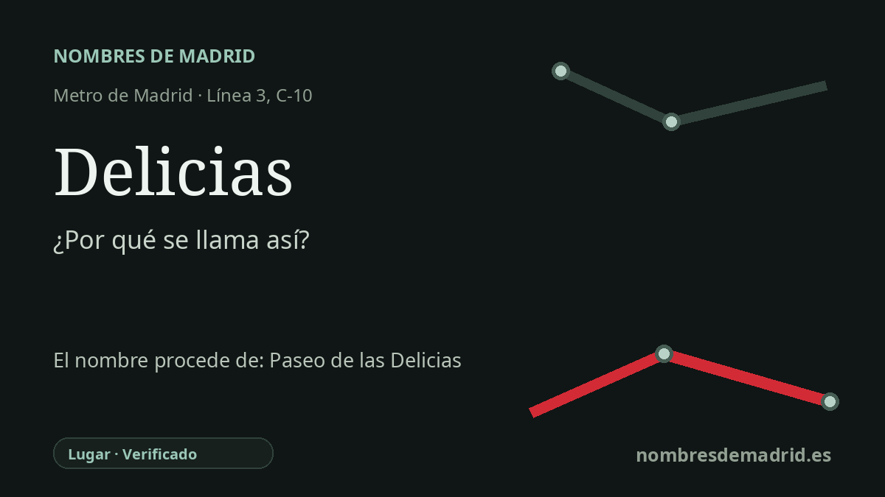

Publicado el · Investigación de Nombres de Madrid · Cómo verificamos cada origen · 7 fuentes consultadas
Respuesta rápida
Delicias toma su nombre del Paseo de las Delicias, un paseo arbolado del siglo XVIII que bajaba desde Atocha hacia el Manzanares. Su forma antigua, Paseo de las Delicias del Río, aludía a un paraje de recreo junto al canal del Manzanares.
La historia del nombre
El nombre de transporte Delicias es un topónimo. Remite en primer lugar al Paseo de las Delicias, la larga avenida de Arganzuela asociada al entorno de la estación, y más al fondo a un antiguo paisaje de recreo del sur de Madrid.
La forma antigua fue Paseo de las Delicias del Río. Un panel del Museo del Ferrocarril explica que el paseo terminaba en un paraje llamado Las Delicias junto al canal del Manzanares. En este contexto, delicias no nombra a una persona: evoca un lugar agradable de ribera, destinado al paseo y al esparcimiento.
El paseo forma parte de la transformación dieciochesca de los accesos y espacios de paseo de Madrid. Durante el reinado de Carlos III, la zona meridional situada entre el borde de la ciudad antigua y el Manzanares se ordenó como área de recreo público, con grandes paseos arbolados. Antonio Ponz, citado por el Museo del Ferrocarril, describía en 1793 el paseo de las Delicias con un espacio para gente de a pie y otro para coches y carruajes, plantado con líneas de olmos.
El arte ayuda a fijar el nombre en el paisaje urbano. Francisco Bayeu pinto El paseo de las Delicias en 1784-1785; el Prado lo describe como uno de los paseos populares del Madrid de finales del siglo XVIII, que unia el Manzanares con la Puerta de Atocha y continuaba hacia el norte con el Prado y el Jardín Botanico. Esa imagen muestra las Delicias antes de que el distrito quedara fuertemente asociado al ferrocarril, la industria y el crecimiento obrero.
El ferrocarril reforzo después el topónimo. La antigua estación de Madrid-Delicias, construida junto al paseo, fue inaugurada el 30 de marzo de 1880 para la línea Madrid-Ciudad Real con continuidad hacia Portugal; desde 1984 alberga el Museo del Ferrocarril. La línea 3 de Metro llegó a Delicias el 26 de marzo de 1949, y la actual estación de Cercanías de Renfe abrió en 1996 tras la operación del Pasillo Verde Ferroviario. El origen mejor documentado sigue siendo el paseo histórico y el paraje ribereno que le dio nombre.